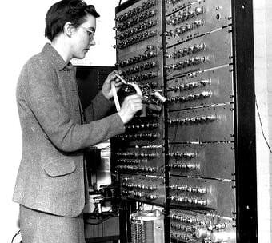

ელექტრონულ კომპიუტერთან მუშაობის პრაქტიკამ აჩვენა, რომ მასთან ურთიერთობის
ენა რთული და რთულია. იმდროინდელი პროგრამები ნულებისა და ერთების თანმიმდევრობას
ჰგავდა - შეცდომის დაშვება ძალიან ადვილი იყო რიცხვების უბრალოდ შეცვლით. მათი
შექმნა შრომატევადი იყო და განსაკუთრებულ ყურადღებას მოითხოვდა. ამავდროულად,
თითოეული კომპიუტერისთვის საჭირო იყო საკუთარი პროგრამის შექმნა და მოწყობილობის
თითოეული ბლოკის ფუნქციონირების თავისებურებების შესწავლა. გადაწყდა მანქანის კოდის
აკრეფის ავტომატიზაცია. 1947 წელს კეტლინ ბუტმა და სხვა მეცნიერებმა შეიმუშავეს ასამბლეის ენა.
ასამბლერში ასოების ან შემოკლებული სიტყვების შემოკლებული ნაკრები გამოიყენებოდა ბრძანებების
და ობიექტების აღსანიშნავად. ამან პროგრამისტებს ბევრად გაუადვილა კოდზე მუშაობა. 